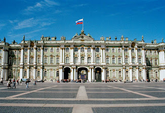
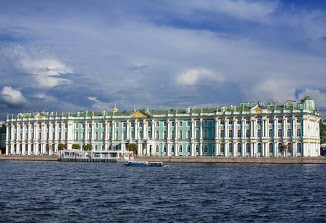
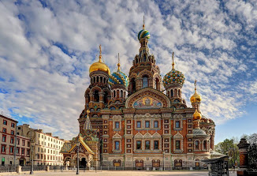

|  | Госуда́рственный Эрмита́ж — музей изобразительного и декоративно-прикладного искусства, расположенный в городе Санкт-Петербург. Второй по величине художественный музей в мире. Главный музейный комплекс включает в себя шесть связанных между собой зданий — Зимний дворец, Запасной дом Зимнего дворца, Малый Эрмитаж, Большой Эрмитаж, Новый Эрмитаж и Эрмитажный театр. В них открыты для посещения 365 залов. Также в распоряжении музея находятся Главный штаб, Музей Императорского фарфорового завода, реставрационно-хранительский центр «Старая Деревня» и Меншиковский дворец. Свою историю музей начинал с коллекции произведений искусства, приобретённых в частном порядке российской императрицей Екатериной II. Первоначально это собрание размещалось в специальном дворцовом флигеле — Эрмитаже — откуда и закрепилось общее название будущего музея. В 1852 году из сильно разросшейся коллекции был сформирован и открыт для посещения публичный музей, расположившийся в специально для этого построенном здании Нового Эрмитажа. Современный Государственный Эрмитаж представляет собой сложный музейный комплекс. |
|  | Зимний дворец — главный императорский дворец России, расположенный по адресу: Дворцовая площадь, 2 / Дворцовая набережная, 38, город Санкт-Петербург. Нынешнее здание дворца построено в 1754—1762 годах русским архитектором итальянского происхождения Бартоломео Франческо Растрелли в стиле пышного елизаветинского барокко с элементами французского рококо в интерьерах. Начиная с советского времени в стенах дворца размещена основная экспозиция Государственного Эрмитажа. С момента окончания строительства в 1762 году по 1904 год использовался в качестве официальной зимней резиденции российских императоров. В 1904 году Николай II перенёс постоянную резиденцию в Александровский дворец в Царском Селе. С октября 1915 года до ноября 1917 года во дворце работал госпиталь имени царевича Алексея Николаевича. С июля по ноябрь 1917 года во дворце размещалось Временное правительство. В январе 1920 года во дворце открыт Государственный музей революции, разделявший здание с Государственным Эрмитажем вплоть до 1941 года. Зимний дворец и Дворцовая площадь образуют красивейший архитектурный ансамбль современного города и являются одним из главных объектов внутрироссийского и международного туризма. |
|  | Собо́р Воскресе́ния Христо́ва на Крови́, или храм Спа́са на Крови́ в Санкт-Петербурге — православный мемориальный однопрестольный храм во имя Воскресения Христова; сооружён в память того, что на этом месте 1 марта 1881 года в результате покушения был смертельно ранен император Александр II. Храм был сооружён как памятник царю-мученику на средства, собранные по всей России. Расположен в историческом центре Санкт-Петербурга на берегу канала Грибоедова рядом с Михайловским садом и Конюшенной площадью. Высота девятиглавого храма — 81 м, вместимость — до 1600 человек. Является музеем и памятником русской архитектуры. Храм был возведён по указу императора Александра III в 1883—1907 годах по совместному проекту архитектора Альфреда Парланда и архимандрита Игнатия, который впоследствии от строительства отошёл. Проект выполнен в «русском стиле», несколько напоминает московский собор Василия Блаженного. Строительство длилось 24 года. 6 августа 1907 года собор был освящён. Имеет статус музея. |
| |